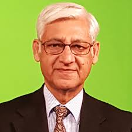

Notice
Course selection date extended
Dear Students,
It is hereby intimated that course selection due date for add/drop course(s) has been extended upto , May 18, 2020.

An interview with Dr. Naveed A. Malik (Founder Rector, Virtual University of Pakistan)
Dr. Naveed A Malik is a renowned personality of our country. His great contribution in launching e-learning concept in Pakistan in the form of Virtual University of Pakistan has been acknowledged at all levels. Government of Pakistan has also awarded him Sitara-e-Imtiaz in 2008 for his remarkable services for the nation.